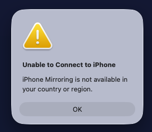

“iPhone Mirroring is not available in your country or region”: what it means and what works instead
Updated October 9, 2026
If your Mac shows Unable to Connect to iPhone. iPhone Mirroring is not available in your country or region, you're almost certainly in the European Union, where Apple hasn't turned the feature on. Here's why, what doesn't help, and how to mirror and control your iPhone from your Mac anyway.

Short answer: no setting on your Mac or iPhone turns Apple's iPhone Mirroring on in the EU. Use an app that doesn't depend on it. Mirror my iPhone mirrors and controls your iPhone over USB, for free, in every country.
Why Apple blocks iPhone Mirroring in the EU
In June 2024, Apple said that iPhone Mirroring, SharePlay screen sharing improvements and Apple Intelligence would not launch in the EU that year, citing the interoperability requirements of the Digital Markets Act (DMA). Apple Intelligence reached the EU in 2025. iPhone Mirroring still hasn't: Apple's iPhone Mirroring support page says iPhone Mirroring is currently unavailable in the European Union.
Apple hasn't announced a date.
That covers all 27 member states: Austria, Belgium, Bulgaria, Croatia, Cyprus, Czechia, Denmark, Estonia, Finland, France, Germany, Greece, Hungary, Ireland, Italy, Latvia, Lithuania, Luxembourg, Malta, the Netherlands, Poland, Portugal, Romania, Slovakia, Slovenia, Spain and Sweden.
What doesn't help
- A VPN. People who have tried report that it doesn't work: Apple's check isn't based on your IP address alone.
- Changing your Apple Account's country. It changes far more than mirroring: your App Store, subscriptions and payment methods. Not worth it for one feature.
- Updating macOS or iOS. No version so far enables iPhone Mirroring in the EU.
How to mirror your iPhone to a Mac in the EU
Mirror my iPhone: see and control your iPhone (free)
Mirror my iPhone is a free, open-source Mac app built for exactly this. It shows your iPhone on your Mac at up to 60 FPS over a USB cable, and you control it with your mouse and trackpad: click to tap, drag to swipe, scroll with two fingers. It runs on macOS 13 Ventura or later, on Apple silicon and Intel Macs.
- Install it with Homebrew (or build it from source):
$ brew tap bhuwanadhikari/mirror-my-iphone https://github.com/bhuwanadhikari/mirror-my-iphone $ brew trust bhuwanadhikari/mirror-my-iphone $ brew install --cask mirror-my-iphone - Plug in your iPhone with a USB data cable and tap Trust.
- Open Mirror my iPhone and allow camera access when macOS asks. That's how the iPhone's screen reaches the Mac.
- For touch control, follow the built-in Doctor: it walks you through Xcode (free), a free Apple ID and Developer Mode on the iPhone.
It doesn't unlock or imitate Apple's feature. It reads the screen through the same USB stream QuickTime Player records, and taps through Apple's own developer tools, which work in every country.
QuickTime Player: see your iPhone (view only)
Built into macOS. Connect your iPhone by USB, open QuickTime Player, choose File › New Movie Recording, click the arrow next to the record button and pick your iPhone as the camera. You'll see its screen, but you can't control it from the Mac.
AirPlay receiver apps: see your iPhone wirelessly (view only)
Apps that turn your Mac into an AirPlay receiver show your iPhone's screen over Wi-Fi via Screen Mirroring in Control Center. AirPlay sends the picture one way, so you can't tap or type from the Mac. Most of these apps are paid.
See all iPhone Mirroring alternatives compared →
Outside the EU? Other reasons iPhone Mirroring won't connect
Apple lists these requirements for iPhone Mirroring. If any is missing, it won't connect:
- A Mac with Apple silicon or the Apple T2 Security Chip, running macOS Sequoia 15 or later
- An iPhone with iOS 18 or later, set up with a passcode
- The same Apple Account on both, with two-factor authentication
- Wi-Fi and Bluetooth turned on on both
- The iPhone locked and near the Mac
- The Mac not sharing its internet connection, and not using AirPlay or Sidecar
- Only one Mac and one iPhone mirroring at a time
If your Mac is older than macOS Sequoia or lacks the T2 chip, Mirror my iPhone works there too, on macOS 13 Ventura or later.
FAQ
Why is iPhone Mirroring not available in my country or region?
If you're in the European Union, Apple hasn't enabled iPhone Mirroring there, citing the Digital Markets Act (DMA). Apple's support page says "iPhone Mirroring is currently unavailable in the European Union."
Will Apple bring iPhone Mirroring to the EU?
Apple hasn't announced a date. In October 2026 its support page still says iPhone Mirroring is unavailable in the European Union.
Does a VPN make iPhone Mirroring work in the EU?
People who have tried report that it doesn't: the check isn't based on your IP address alone. Changing your Apple Account's country affects your App Store, subscriptions and payment methods, so it isn't a good fix either.
How can I mirror my iPhone to my Mac in the EU?
Use an app that doesn't depend on Apple's iPhone Mirroring. Mirror my iPhone is free and open source: it mirrors your iPhone over USB at up to 60 FPS and lets you control it with your mouse and trackpad. QuickTime Player can show the iPhone's screen over USB too, but without control.
Does Mirror my iPhone bypass Apple's region lock?
No. It doesn't use or unlock Apple's iPhone Mirroring. It uses the USB screen stream that QuickTime Player records and Apple's developer tools (Xcode and WebDriverAgent), which work in every country.
Mirror your iPhone in the EU, free
60 FPS over USB, mouse and trackpad control, and an API for AI agents. Open source, MIT licensed.